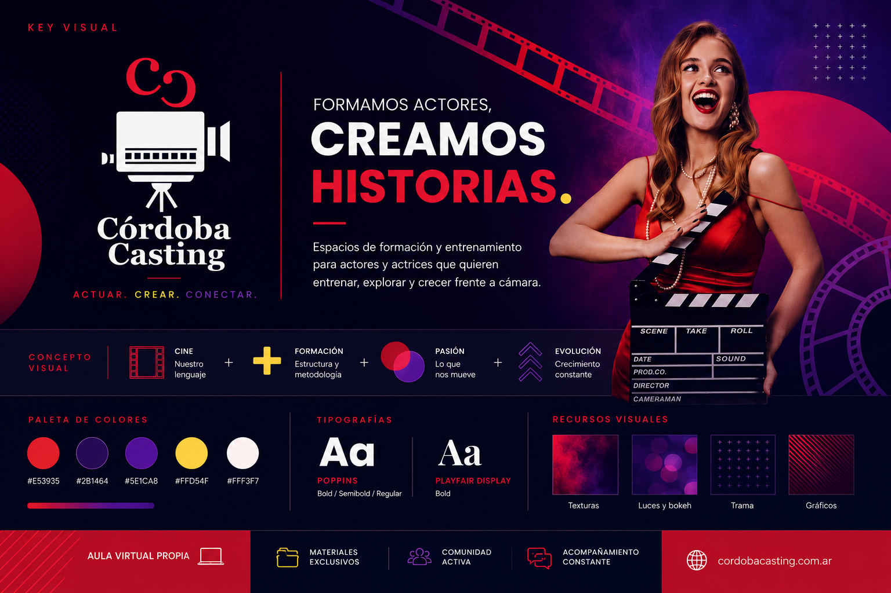

ACTUACIÓN FRENTE A CÁMARA
Nivel 1
Punto de partidaFundamentos del lenguaje audiovisual y primeras herramientas específicas para interpretar frente a cámara.
↗FORMACIÓN AUDIOVISUAL · CÓRDOBA
Entrenamiento profesional para actuar, dirigir y presentarte frente a cámara. Una formación pensada desde el lenguaje audiovisual y llevada a la práctica.
Entrenamos actores y actrices para entender qué sucede cuando una interpretación pasa por una cámara.
Planos, continuidad, escucha, acción, microgestos, casting, dirección y construcción de escena. La técnica se incorpora haciendo, observando y volviendo a hacer.
Conocé nuestra metodología ↗El recorrido principal está dividido en tres niveles consecutivos. Cada etapa tiene objetivos propios y queda completa: si necesitás hacer una pausa, podés retomar meses después desde el nivel siguiente sin empezar de cero.
ACTUACIÓN FRENTE A CÁMARA
Fundamentos del lenguaje audiovisual y primeras herramientas específicas para interpretar frente a cámara.
↗ACTUACIÓN FRENTE A CÁMARA
Profundización técnica, métodos de actuación, análisis y escenas de mayor complejidad.
↗ACTUACIÓN FRENTE A CÁMARA
Personaje, géneros, decisiones actorales y aplicación integral del recorrido frente a cámara.
↗Cursos y talleres construidos alrededor de necesidades concretas del trabajo audiovisual.
RECORRIDO · ACTUACIÓN
Nivel 1, Nivel 2 y Nivel 3. Un trayecto progresivo para desarrollar herramientas específicas de interpretación audiovisual.
PRÁCTICA
Ensayo y grabación para actores con experiencia previa frente a cámara, en Córdoba Casting o en una formación similar.
CASTING + MATERIAL PROFESIONAL
Preparación integral para presentarte a castings. Terminás el curso con 4 fotos profesionales y un monólogo grabado.
10 A 14 AÑOS
Una introducción al lenguaje audiovisual y la actuación frente a cámara adaptada a jóvenes intérpretes.
REALIZACIÓN
Herramientas para comunicar, ensayar y construir interpretaciones desde el rol de dirección audiovisual.
Producción audiovisual pensada específicamente para actores y actrices que necesitan presentarse profesionalmente.

La formación se construye en contacto con el dispositivo audiovisual. Entrenamos la interpretación entendiendo encuadre, continuidad, escala, escucha y puesta en escena.
Aula virtual propia
Materiales y continuidad entre clases.
Entrenamiento específico
Herramientas diseñadas para cámara.
Comunidad activa
Un ecosistema que continúa fuera del aula.
Construimos herramientas para que actores y realizadores puedan encontrarse, mostrar su trabajo y seguir vinculados al audiovisual de Córdoba.
Próximamente: experiencias reales de alumnos y alumnas de Córdoba Casting.
El Nivel 1 funciona como puerta de entrada al recorrido y está pensado para construir las bases específicas del trabajo frente a cámara.
No. El recorrido es progresivo: Nivel 2 requiere haber completado Nivel 1 y Nivel 3 requiere haber completado Nivel 2.
Podés retomar más adelante desde el siguiente nivel. La división modular existe justamente para que no tengas que volver a empezar el recorrido.
Sí. Se requiere experiencia previa frente a cámara o haber realizado un curso equivalente, ya sea en Córdoba Casting o en otra institución.
ACTUAR · CREAR · CONECTAR